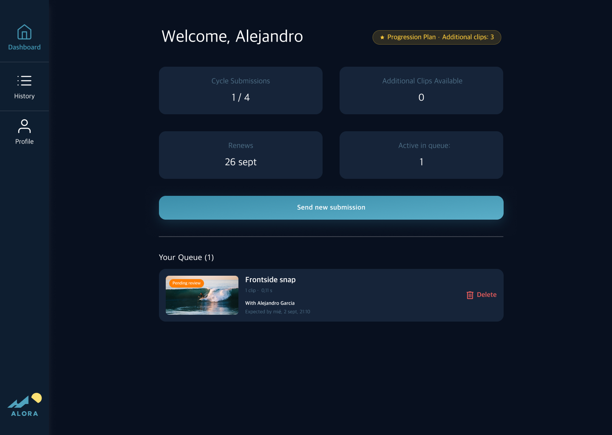
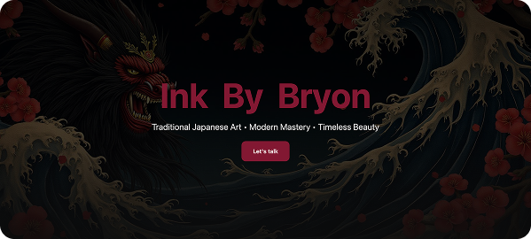

In this section, you'll find projects where technology and design thinking converge, demonstrating how AI-driven processes can enhance creativity, precision, and velocity.

Alora
ALORA is an online surf coaching platform that provides personalized video analysis from experienced surf coaches. Surfers upload footage of their sessions and receive detailed feedback on technique.

View moreInk By Bryon
This project involved designing and developing a sleek, modern landing page for Ink By Bryon. Using Lovable, I created a visually compelling and user-friendly website that highlights Bryon's unique tattoo style and services.

View moreKG braids
Add a short description of this sub-project here: what it is, the problem it solves, and the tools you used to build it.
 View more
View more
Abora Tattoo
Bilingual website for a tattoo studio in Lanzarote, designed in Figma and coded in HTML, CSS and JavaScript.
 View more
View more